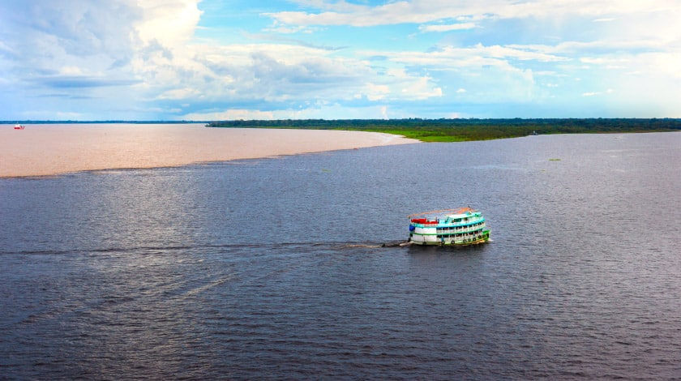
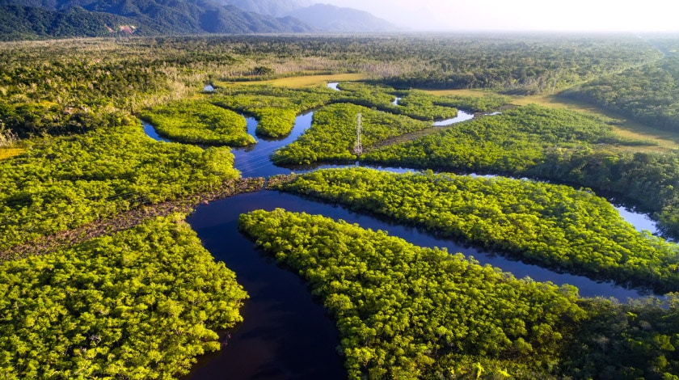
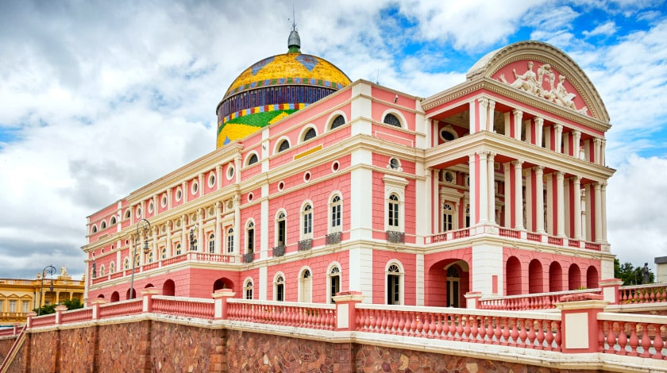
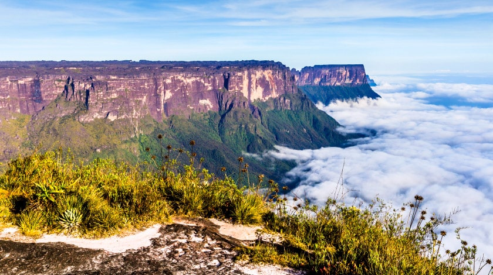

Encontro das Águas

Considerado o maior patrimônio imaterial de Manaus, no Amazonas, o fenômeno
fascina os turistas da capital amazônica. Por causa das diferentes velocidades,
temperaturas e densidades, os rios Negro e Solimões correm cerca de 6 km sem
se misturar, formando a atração. Durante o passeio é possível sentir a diferença
no estado das águas, além de observar os botos que frequentemente aparecem pelo
caminho das embarcações entretendo os visitantes.
Floresta Amazônica

A Selva Amazônica é uma das maravilhas naturais do mundo, e um dos mais
famosos pontos turísticos do Brasil é o famoso encontro dos rios Negro
e Solimões. Além do encontro das águas, vale conhecer ainda o Parque
Nacional de Anavilhanas, um dos maiores arquipélagos fluviais do mundo,
escalar árvores, explorar grutas, pescar, nadar com botos e visitar tribos
indígenas. A Amazônia, uma das maiores riquezas nacionais, oferece momentos
de conexão única com a natureza!
Teatro Amazonas

Construído em 1896, o espaço é um dos cartões-postais de Manaus. O edifício
histórico mostra belezas da arquitetura do século XIX tanto em seu interior
como no exterior. No local há visitas guiadas para conhecer um pouco da
história que envolve a construção, símbolo da riqueza do látex. Os guias
mostram o sentido real de cada pintura, objeto e peças do lugar, onde cada
detalhe prende a atenção do público. O espaço mais visitado é o salão principal
que possui o teto em tom de rosa, com características do barroco e vidros
coloridos, além da cúpula externa, com mais de 19 mil pequenos ladrilhos que
homenageiam a República do Brasil.
Monte Roraima

Com 2.875 m de altitude, o monte é considerado o sétimo ponto mais alto do
Brasil e é um dos destinos mais cobiçados por viajantes do mundo inteiro.
Localizado no município de Uiramutã, está em meio a tríplice fronteira de
Brasil, Guiana e Venezuela, e possui inúmeras falésias que impressionam
por suas formações rochosas. O passeio ganha um ar especial com as belezas
dos rios, cachoeiras e esculturas de cristal que complementam a paisagem.